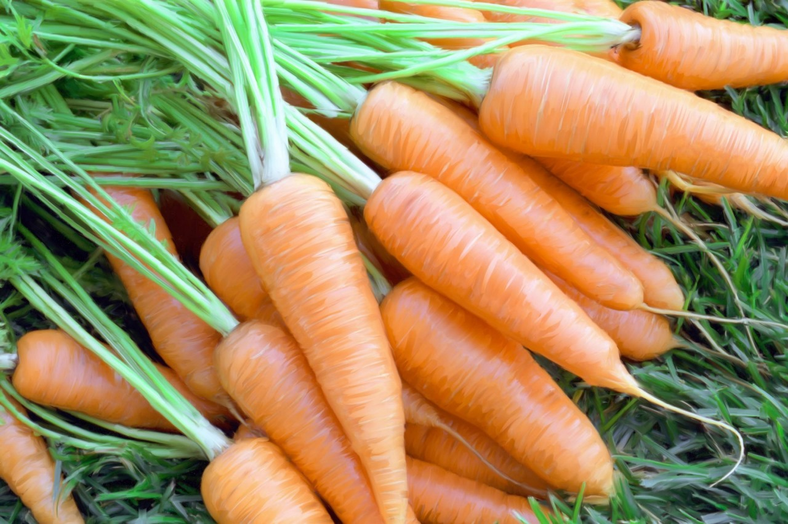
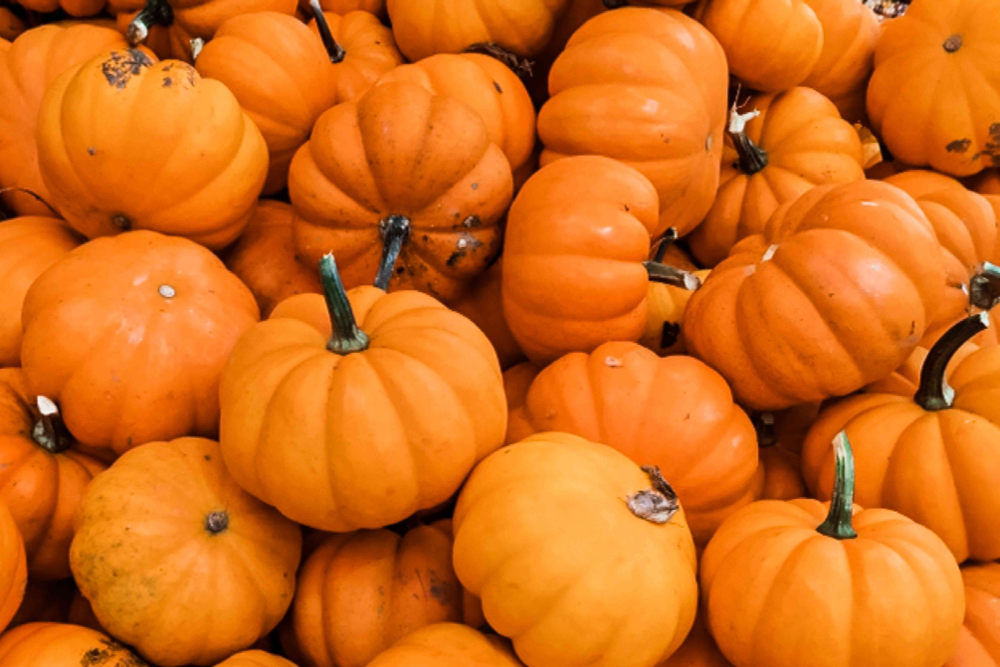
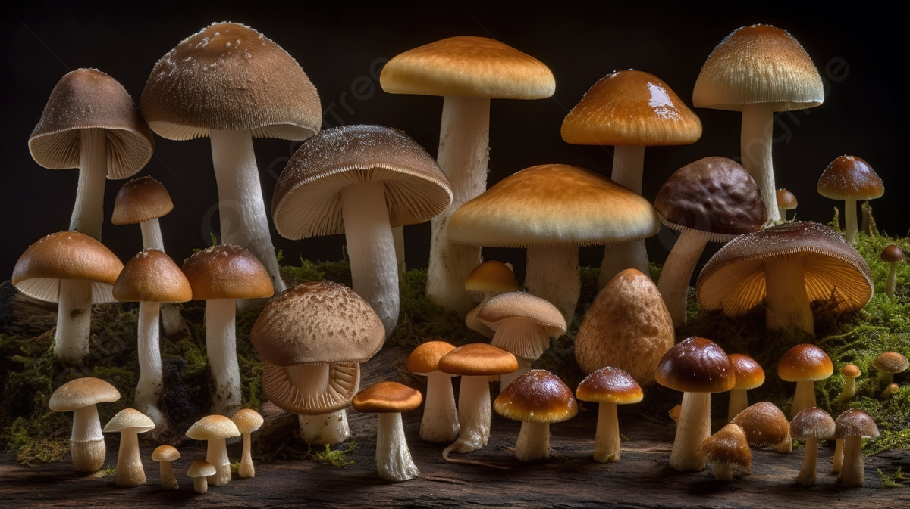

Go Back
Fruits
Flowers
Vegetables
Dashboard
Tomato
Everything About Tomatoes
Family/Species:
Solanaceae / Solanum lycopersicum
Description:
Tomatoes are the edible fruits of the tomato plant, which is a perennial in its native habitat but is often grown as an annual in temperate climates. The tomato plant typically has a weak stem that sprawls along the ground or climbs with support. The leaves are pinnate and have a distinctive odor when crushed. The fruits vary in size, shape, and color depending on the variety, ranging from small cherry tomatoes to large beefsteak tomatoes and colors including red, yellow, orange, green, and even purple. Tomatoes are used in a wide range of culinary dishes, from salads and sauces to soups and sandwiches.
Season of Planting:
The best season for planting tomatoes typically depends on your location and local climate. In general, tomatoes are warm-season plants that thrive in temperatures between 70°F and 85°F (21°C to 29°C).
Importance:
Nutritional Value:
Tomatoes are rich in essential nutrients such as vitamin C, potassium, folate, and vitamin K. They also contain beneficial compounds like lycopene, which is a powerful antioxidant known for its potential health benefits, including reducing the risk of certain chronic diseases.
Culinary Versatility:
Tomatoes are incredibly versatile in cooking and are used in a wide range of dishes worldwide. They can be consumed raw in salads, sandwiches, and salsas, as well as cooked in sauces, soups, stews, and various other recipes. Their flavor adds depth and richness to many dishes.
Health Benefits:
The consumption of tomatoes has been associated with several health benefits, including improved heart health, reduced risk of certain cancers, and support for overall well-being due to their nutrient content and antioxidant properties.
Dietary Staple:
In many cultures, tomatoes are a dietary staple, providing an important source of nutrients and flavor in everyday meals. They play a crucial role in traditional cuisines around the world, such as Italian, Mexican, and Mediterranean cuisines.
Economic Impact:
Tomatoes are a major agricultural crop globally, contributing significantly to the economy in many regions. They are grown commercially in various countries and are an essential source of income for farmers and agricultural communities.
Cultural Significance:
Tomatoes hold cultural significance in various societies and culinary traditions. They are celebrated in festivals, featured in folklore and literature, and revered as an integral part of regional cuisines and culinary heritage.
Diverse Varieties:
Tomatoes come in a wide range of shapes, sizes, colors, and flavors, offering consumers a diverse selection to choose from. This diversity contributes to the culinary creativity and enjoyment of incorporating tomatoes into different dishes.
Control Methods
Cultural Control:
Planting tomatoes in well-drained soil with good organic matter content is crucial for healthy root development and disease prevention. Proper spacing between plants allows for adequate airflow, reducing the risk of fungal diseases like early blight and late blight. Mulching with organic materials helps retain moisture, suppress weeds, and prevent soil-borne diseases.
Biological Control:
Introducing natural predators such as ladybugs, lacewings, and parasitic wasps can help control common tomato pests like aphids, whiteflies, and caterpillars. Encouraging biodiversity in the tomato garden by planting insect-attracting flowers and preserving natural habitats supports a healthy ecosystem that regulates pest populations.
Mechanical Control:
Handpicking pests like caterpillars and tomato hornworms can be effective, especially in smaller gardens. Physically removing infected plant parts and pruning affected branches can help manage pest and disease outbreaks.
Chemical Control:
When necessary, targeted treatments such as insecticides or pesticides may be used to manage specific pests. For example, insecticidal soaps or neem oil can control aphids and whiteflies, while Bacillus thuringiensis (Bt) can control caterpillars. Fungicides may also be applied preventatively or curatively to manage fungal diseases like powdery mildew and septoria leaf spot.
Organic Control:
Organic methods for tomato pest and disease management include practices like using neem oil or insecticidal soap sprays to control pests, applying compost or organic fertilizers to improve soil health, and utilizing beneficial microbes and biopesticides to suppress pathogenic fungi. Cultural practices such as crop rotation, companion planting with pest-repellent plants like marigolds and basil, and using reflective mulches can also enhance plant resilience against pests and diseases.
Onion
What To Know About Onions
Family/Species:
Amaryllidaceae / Allium cepa
Description:
Onions are bulbous vegetables with a pungent flavor and aroma. They have a layered structure consisting of concentric rings of edible flesh surrounding a central core. The outer layers are typically dry and papery, while the inner layers are juicy and crisp. Onions come in various colors, including white, yellow, and red/purple, with each variety offering its unique taste and culinary characteristics. They are widely used as a flavoring ingredient in cooking and are consumed raw, cooked, or processed in various dishes worldwide.
Season of Care:
The ideal season for planting onions depends on the variety and local climate conditions. Onions are typically planted as sets (small bulbs) or from seeds in the early spring, after the last frost date and when the soil has warmed up sufficiently. In colder regions, onion sets are often planted in the fall for overwintering and harvested the following summer. Onions require well-drained soil, full sun, and consistent moisture to thrive.
Importance:
Nutritional Value:
Onions are low in calories but high in vitamins, minerals, and antioxidants. They are a good source of vitamin C, vitamin B6, folate, and potassium. Additionally, onions contain various antioxidants, particularly flavonoids, which have been linked to numerous health benefits, including reduced risk of heart disease and certain cancers.
Flavor Enhancement:
Onions are a fundamental ingredient in many cuisines around the world. They add depth, flavor, and aroma to a wide range of dishes, from soups and stews to salads, stir-fries, and sauces. Their versatility in cooking makes them a staple ingredient in numerous culinary traditions.
Medicinal Properties:
Onions have been used for centuries in traditional medicine for their potential health benefits. They have antimicrobial properties and may help boost the immune system. Some studies suggest that onions may have anti-inflammatory effects and could contribute to improved heart health and blood sugar control.
Culinary Versatility:
Onions come in various types, including yellow, white, and red onions, each with its own flavor profile and culinary uses. They can be consumed raw, cooked, or caramelized, providing different textures and flavors to dishes. Onions are also commonly used as a base ingredient in many recipes, forming the flavor foundation for countless dishes.
Long Shelf Life:
Onions have a relatively long shelf life compared to many other vegetables, especially when stored in a cool, dry place with good ventilation. This makes them a convenient and economical choice for consumers, as they can be stored for several weeks or even months without significant loss of quality.
Cultural and Culinary Significance:
Onions have cultural significance in many societies and are often associated with traditional dishes and culinary practices. They play a key role in shaping the flavors and identities of various cuisines around the world, from French onion soup to Indian curries and Mexican salsas.
Control Methods
Cultural Control:
Proper crop rotation is essential to prevent the buildup of pests and diseases specific to onions. Planting onions in well-drained soil with good fertility and pH levels optimizes their growth and resilience. Adequate spacing between plants ensures good airflow and reduces the risk of fungal diseases. Weed management is also crucial to prevent competition for nutrients and reduce shelter for pests.
Biological Control:
Introducing natural predators and beneficial organisms can help control pests in onion fields. For example, predatory insects such as ladybugs and lacewings can prey on aphids, thrips, and other pests. Nematodes and predatory mites can target soil-dwelling pests like onion maggots. Additionally, promoting biodiversity in and around onion fields by maintaining hedgerows or planting cover crops can support natural enemies of pests.
Mechanical Control:
Handpicking and removing pests like onion maggots, thrips, and aphids can be effective in smaller-scale operations. Physical barriers such as row covers can prevent pests from accessing onion plants. Installing traps for pests like onion flies can help monitor their populations and reduce their numbers.
Chemical Control:
When necessary, targeted treatments such as insecticides or pesticides may be used to manage specific pests. For example, insecticidal soaps or neem oil can control aphids and thrips, while spinosad-based products can target onion maggots. Fungicides may also be applied to manage diseases like onion white rot and purple blotch. It's important to follow label instructions and apply chemicals judiciously to minimize environmental impact.
Organic Control:
Organic methods for onion pest and disease management include practices like using neem oil or insecticidal soap sprays to control pests, applying compost or organic fertilizers to improve soil health, and utilizing beneficial microbes and biopesticides to suppress pathogenic fungi. Cultural practices such as crop rotation, intercropping with pest-repellent plants, and utilizing mulches can also enhance plant resilience against pests and diseases in organic onion production.

Carrot
What To Know About carrots
Family/SPecies:
Apiaceae / Daucus carota.
Description:
Carrots are root vegetables characterized by their elongated, cylindrical shape and vibrant orange color, although they can also be found in other colors such as purple, yellow, white, and red. They have a crunchy texture and a sweet, earthy flavor. Carrots are composed of a dense, fibrous root and green leafy tops (greens) that are often trimmed before consumption. They are rich in beta-carotene, a precursor to vitamin A, as well as other vitamins and minerals such as vitamin K, vitamin C, potassium, and fiber. Carrots are commonly consumed raw as a snack or salad ingredient, as well as cooked in various dishes such as soups, stews, and side dishes.
Season of Care:
The ideal season for planting carrots varies depending on the local climate and growing conditions. Carrots are typically planted in the early spring or late summer/early fall in temperate regions. In regions with mild winters, carrots can be planted in the fall for overwintering and harvested in the spring. Carrots prefer loose, well-drained soil and full sun but can tolerate some shade. They require consistent moisture for germination and growth but should not be overwatered to avoid rotting.
Importance:
Nutritional Value:
Carrots are highly nutritious and packed with essential vitamins and minerals. They are an excellent source of beta-carotene, which is converted into vitamin A in the body and is crucial for maintaining healthy vision, immune function, and skin health. Carrots also contain vitamin K, vitamin C, potassium, and fiber, contributing to overall health and well-being.
Versatility in Cooking:
Carrots are incredibly versatile and can be used in a variety of dishes, both raw and cooked. They add sweetness, texture, and vibrant color to salads, stir-fries, soups, stews, and casseroles. Carrots can be shredded, sliced, diced, or pureed, making them suitable for a wide range of culinary applications.
Long Shelf Life:
Carrots have a relatively long shelf life compared to many other vegetables, especially when stored properly in a cool, dark place or in the refrigerator. This makes them a convenient and economical choice for consumers, as they can be kept for several weeks without significant loss of quality.
Health Benefits:
Regular consumption of carrots is associated with numerous health benefits. Their high fiber content supports digestive health and helps regulate blood sugar levels. The antioxidants found in carrots, including beta-carotene and other phytonutrients, have been linked to reduced risk of chronic diseases such as heart disease, certain cancers, and age-related macular degeneration.
Culinary Uses:
Carrots are used in various cuisines around the world and are an integral part of many traditional dishes. They are commonly used as a flavoring agent in stocks, sauces, and soups, as well as a key ingredient in side dishes, salads, and vegetable medleys. Carrots can also be pickled, roasted, or used to make juices and smoothies.
Ease of Cultivation:
Carrots are relatively easy to grow in a home garden or on a larger scale. They can be planted in both spring and fall and require minimal care, preferring well-drained soil and regular watering. With proper attention to soil preparation and spacing, home gardeners can enjoy a bountiful harvest of fresh, flavorful carrots.
Control Methods
Cultural Control:
Proper crop rotation is essential to prevent the buildup of pests and diseases specific to carrots. Planting carrots in well-drained soil with good fertility and pH levels optimizes their growth and resilience. Proper spacing between plants ensures good airflow and reduces the risk of fungal diseases. Weed management is also crucial to prevent competition for nutrients and reduce shelter for pests.
Biological Control:
Introducing natural predators and beneficial organisms can help control pests in carrot fields. For example, predatory insects such as ladybugs, lacewings, and parasitic wasps can prey on aphids, thrips, and other pests. Nematodes and predatory mites can target soil-dwelling pests like carrot rust flies. Additionally, promoting biodiversity in and around carrot fields by maintaining hedgerows or planting cover crops can support natural enemies of pests.
Mechanical Control:
Handpicking and removing pests like carrot rust flies, aphids, and leafhoppers can be effective in smaller-scale operations. Physical barriers such as row covers can prevent pests from accessing carrot plants. Installing traps for pests like carrot rust flies can help monitor their populations and reduce their numbers.
Chemical Control:
When necessary, targeted treatments such as insecticides or pesticides may be used to manage specific pests. For example, insecticidal soaps or neem oil can control aphids and thrips, while spinosad-based products can target carrot rust flies. Fungicides may also be applied to manage diseases like carrot leaf blight and cavity spot. It's important to follow label instructions and apply chemicals judiciously to minimize environmental impact.
Organic Control:
Organic methods for carrot pest and disease management include practices like using neem oil or insecticidal soap sprays to control pests, applying compost or organic fertilizers to improve soil health, and utilizing beneficial microbes and biopesticides to suppress pathogenic fungi. Cultural practices such as crop rotation, intercropping with pest-repellent plants, and utilizing mulches can also enhance plant resilience against pests and diseases in organic carrot production.
Lettuce
What To Know About Lettuces
Family:
Asteraceae / Lactuca.
Description:
Lettuce is a leafy green vegetable with a mild flavor and crisp texture. It typically has elongated or rounded leaves that form a rosette at the base of the plant. Lettuce leaves can vary in color, ranging from light green to dark green, red, or purple, depending on the variety. There are several types of lettuce, including iceberg, romaine, leaf, and butterhead, each with its unique characteristics and uses in culinary applications. Lettuce is commonly consumed fresh in salads, sandwiches, wraps, and as a garnish.
Season of Care:
The ideal season for planting lettuce depends on the local climate and growing conditions. Lettuce is a cool-season crop that thrives in temperatures between 60°F and 70°F (15°C to 21°C). It can be planted as soon as the soil can be worked in the spring, and it is also suitable for fall planting in many regions. Lettuce prefers well-drained soil and partial shade in hot climates to prevent bolting (premature flowering and seed formation). It is a fast-growing vegetable that can be harvested when the leaves reach the desired size, typically within 30 to 60 days after planting.
Importance:
Nutritional Value:
Lettuce is low in calories but rich in essential nutrients, including vitamins A, C, and K, as well as folate and fiber. It provides important antioxidants that help protect cells from damage caused by free radicals. As a result, lettuce contributes to overall health and well-being.
Versatility in Cooking:
Lettuce is incredibly versatile and can be used in a variety of dishes, both raw and cooked. It is commonly used as a base for salads, sandwiches, wraps, and burgers. Lettuce leaves can also be used as a crispy topping for tacos or as a bed for grilled meats or vegetables. Additionally, certain varieties of lettuce, such as romaine or iceberg, are popular choices for lettuce wraps and lettuce cups.
Texture and Flavor:
Lettuce provides a crisp and refreshing texture to dishes, adding a satisfying crunch to salads and sandwiches. Its mild and slightly sweet flavor complements a wide range of ingredients and dressings, making it a versatile ingredient in various cuisines.
Hydration:
Lettuce has a high water content, which contributes to hydration and helps maintain fluid balance in the body. Consuming lettuce as part of a balanced diet can contribute to overall hydration, especially during hot weather or physical activity.
Ease of Cultivation:
Lettuce is relatively easy to grow in a home garden or on a larger scale. It can be grown in various climates and requires minimal care, making it suitable for novice gardeners. Lettuce can be harvested at different stages of growth, from baby greens to mature heads, providing flexibility in harvesting and consumption.
Quick Growth:
Lettuce has a relatively short growing cycle, allowing for multiple harvests throughout the growing season. This makes it a convenient and efficient crop for home gardeners and commercial growers alike.
Control Methods
Cultural Control:
Proper cultural practices are essential for maintaining the health of lettuce plants. Planting lettuce in well-drained soil with good fertility and pH levels optimizes their growth and resilience. Adequate spacing between plants ensures good airflow and reduces the risk of fungal diseases. Proper irrigation management, such as avoiding overhead watering to minimize leaf wetness, can help prevent diseases like downy mildew and lettuce rot.
Biological Control:
Introducing natural predators and beneficial organisms can help control pests in lettuce crops. For example, predatory insects such as ladybugs, lacewings, and parasitic wasps can prey on aphids, thrips, and other pests. Encouraging biodiversity in and around lettuce fields by maintaining hedgerows or planting cover crops can support natural enemies of pests.
Mechanical Control:
Handpicking and removing pests like aphids, thrips, and caterpillars can be effective in smaller-scale operations. Physical barriers such as row covers or netting can prevent pests from accessing lettuce plants. Installing traps for pests like aphids and thrips can help monitor their populations and reduce their numbers.
Chemical Control:
When necessary, targeted treatments such as insecticides or pesticides may be used to manage specific pests. For example, insecticidal soaps or neem oil can control aphids and thrips, while spinosad-based products can target caterpillars. Fungicides may also be applied to manage diseases like downy mildew and powdery mildew. It's important to follow label instructions and apply chemicals judiciously to minimize environmental impact.
Organic Control:
Organic methods for lettuce pest and disease management include practices like using neem oil or insecticidal soap sprays to control pests, applying compost or organic fertilizers to improve soil health, and utilizing beneficial microbes and biopesticides to suppress pathogenic fungi. Cultural practices such as crop rotation, intercropping with pest-repellent plants, and utilizing mulches can also enhance plant resilience against pests and diseases in organic lettuce production.

Pumpkin
What To Know About Pumpkins
Family:
Cucurbitaceae / Cucurbita pepo
Description:
Pumpkins are large, round or oblong fruits with thick, ribbed skin and a hollow cavity containing seeds and pulp. They typically have orange or yellowish-orange flesh, although some varieties may have green, white, or even striped skin. Pumpkins are vine plants that produce trailing stems with large, lobed leaves and tendrils for climbing. The flesh of pumpkins is sweet and mildly flavored, making them versatile for both sweet and savory dishes. Pumpkins are commonly used in cooking, baking, and as decorative elements for Halloween and Thanksgiving.
Season of Care:
The ideal season for planting pumpkins depends on the local climate and growing conditions. Pumpkins are warm-season crops that require temperatures between 70°F and 90°F (21°C to 32°C) to germinate and grow. They are typically planted outdoors after the last frost date in the spring, once the soil has warmed up sufficiently. Pumpkins prefer well-drained soil and full sun for optimal growth. They require ample space to spread their vines and produce fruit, so they are often planted in hills or mounds with plenty of room for expansion.
Importance:
Nutritional Value:
Pumpkins are rich in essential nutrients, including vitamins A, C, and E, as well as fiber and potassium. They are low in calories and provide important antioxidants, such as beta-carotene, which is converted into vitamin A in the body and supports eye health, immune function, and skin health.
Versatility in Cooking:
Pumpkins can be used in a variety of dishes, both sweet and savory. They are commonly used in soups, stews, and curries, as well as baked goods like pies, muffins, and bread. Roasted pumpkin seeds are a popular snack, while pumpkin puree can be used as a base for sauces, dips, and desserts.
Seasonal Ingredient:
Pumpkins are often associated with fall and are commonly used in seasonal dishes and decorations during the autumn months. Their vibrant orange color and distinctive flavor add warmth and richness to seasonal recipes, making them a staple ingredient in holiday celebrations like Thanksgiving and Halloween.
Culinary Uses:
Pumpkins are used in various cuisines around the world and are an integral part of many traditional dishes. They are versatile and can be cooked in numerous ways, including boiling, roasting, steaming, and baking. Pumpkin dishes range from savory to sweet, and their mild, slightly sweet flavor complements a wide range of ingredients and spices.
Health Benefits:
Consuming pumpkins as part of a balanced diet is associated with numerous health benefits. Their high fiber content supports digestive health and helps regulate blood sugar levels. The antioxidants found in pumpkins, including beta-carotene and other phytonutrients, have been linked to reduced risk of chronic diseases such as heart disease, certain cancers, and age-related macular degeneration.
Cultural Significance:
Pumpkins have cultural significance in many societies and are often used in traditional rituals, celebrations, and folklore. They are commonly carved into jack-o'-lanterns for Halloween, symbolizing the harvest season and warding off evil spirits. Pumpkins are also used in various cultural and religious festivals around the world, representing abundance, fertility, and prosperity.
Control Methods
Cultural Control:
Proper cultural practices are essential for maintaining the health of pumpkin plants. Planting pumpkins in well-drained soil with good fertility and pH levels optimizes their growth and resilience. Adequate spacing between plants ensures good airflow and reduces the risk of fungal diseases. Proper irrigation management, such as avoiding overhead watering to minimize leaf wetness, can help prevent diseases like powdery mildew and downy mildew.
Biological Control:
Introducing natural predators and beneficial organisms can help control pests in pumpkin crops. For example, predatory insects such as ladybugs, lacewings, and parasitic wasps can prey on aphids, cucumber beetles, and other pests. Encouraging biodiversity in and around pumpkin fields by maintaining hedgerows or planting cover crops can support natural enemies of pests.
Mechanical Control:
Handpicking and removing pests like cucumber beetles, squash bugs, and aphids can be effective in smaller-scale operations. Physical barriers such as row covers or netting can prevent pests from accessing pumpkin plants. Installing traps for pests like cucumber beetles and squash bugs can help monitor their populations and reduce their numbers.
Chemical Control:
When necessary, targeted treatments such as insecticides or pesticides may be used to manage specific pests. For example, insecticidal soaps or neem oil can control aphids and cucumber beetles, while pyrethroid-based products can target squash bugs. Fungicides may also be applied to manage diseases like powdery mildew and downy mildew. It's important to follow label instructions and apply chemicals judiciously to minimize environmental impact.
Organic Control:
Organic methods for pumpkin pest and disease management include practices like using neem oil or insecticidal soap sprays to control pests, applying compost or organic fertilizers to improve soil health, and utilizing beneficial microbes and biopesticides to suppress pathogenic fungi. Cultural practices such as crop rotation, intercropping with pest-repellent plants, and utilizing mulches can also enhance plant resilience against pests and diseases in organic pumpkin production.

Mushroom
What To Know About Mushrooms
Family/Species:
Kingdom Fungi
Description:
Mushrooms are fungi that grow in a wide range of shapes, sizes, and colors. They typically consist of a cap (the upper part) and a stem (the lower part), although some varieties may have unique structures. The cap can vary from flat to convex or umbrella-shaped, while the stem may be short or elongated. Mushrooms reproduce by producing spores, which are released from the underside of the cap. Edible mushrooms come in various flavors and textures, ranging from mild and delicate to robust and meaty. They are commonly used in cooking and culinary dishes, adding flavor, texture, and nutritional value to a wide range of recipes.
Season of Planting:
Mushrooms can be cultivated year-round indoors or outdoors, depending on the species and cultivation method. However, certain species may have specific temperature and humidity requirements for optimal growth. Indoor mushroom cultivation typically involves growing mushrooms in controlled environments such as mushroom houses, greenhouses, or specialized grow rooms. Outdoor cultivation may involve growing mushrooms in natural habitats or specially prepared beds or logs. Different mushroom species may have different cultivation seasons and techniques.
Importance:
Nutritional Value:
Despite their low-calorie content, mushrooms are packed with essential nutrients. They are a good source of protein, B vitamins (such as riboflavin, niacin, and pantothenic acid), minerals (such as selenium, potassium, and copper), and antioxidants. Mushrooms also contain dietary fiber and are low in fat and cholesterol.
Versatility in Cooking:
Mushrooms are incredibly versatile in cooking and can be used in various dishes. They can be sautéed, grilled, roasted, or eaten raw in salads. Mushrooms add depth of flavor and umami richness to dishes like soups, stews, pasta dishes, pizzas, and stir-fries. They can also be stuffed, pickled, or used as a meat substitute in vegetarian and vegan recipes.
Texture and Flavor:
Mushrooms have a unique texture and flavor that can vary depending on the type of mushroom. Some mushrooms have a meaty texture, while others are more delicate and have a mild, earthy flavor. The variety of mushroom types available, including common varieties like button mushrooms, portobello mushrooms, and shiitake mushrooms, allows for diverse culinary applications.
Health Benefits:
Consuming mushrooms as part of a balanced diet is associated with numerous health benefits. The antioxidants found in mushrooms help protect cells from damage caused by free radicals and may reduce the risk of chronic diseases such as heart disease, certain cancers, and neurodegenerative disorders. Mushrooms also contain compounds like beta-glucans, which have immune-boosting properties.
Sustainability:
Mushroom cultivation is relatively environmentally friendly compared to other types of food production. Mushrooms can be grown indoors in controlled environments, using organic waste materials such as agricultural byproducts or composted substrates as a growing medium. This reduces the need for arable land and minimizes environmental impact.
Cultural Significance:
Mushrooms have cultural significance in many societies and culinary traditions around the world. They have been used in traditional medicine for centuries and are valued for their medicinal properties in various cultures. Mushrooms also play a role in folklore and mythology, often symbolizing longevity, wisdom, or mystical powers.
Control Methods
Cultural Control:
Proper substrate management, maintenance of optimal environmental conditions, regular sanitation practices, and effective waste management are essential cultural practices for preventing pest and disease buildup in mushroom cultivation.
Biological Control:
Incorporating beneficial microorganisms like Trichoderma spp. and Bacillus spp., introducing predatory insects such as Hypoaspis miles or predatory mites, and utilizing beneficial fungi like mycorrhizae contribute to biological control measures in mushroom pest and disease management.
Mechanical Control:
Handpicking and removing pests, installing physical barriers like screens or nets, and managing ventilation to control humidity levels are key mechanical control methods used to mitigate pest and disease pressure in mushroom crops.
Chemical Control:
Limited use of approved fungicides to manage fungal diseases like green mold or cobweb mold, and judicious application of insecticides to control pests such as mushroom flies or mites are considered chemical control measures in mushroom pest and disease management.
Organic Control:
Utilizing organic substrates, implementing biological control measures with beneficial microorganisms and predatory insects, and promoting natural balance and soil health align with organic farming principles and contribute to organic pest and disease management in mushroom cultivation.